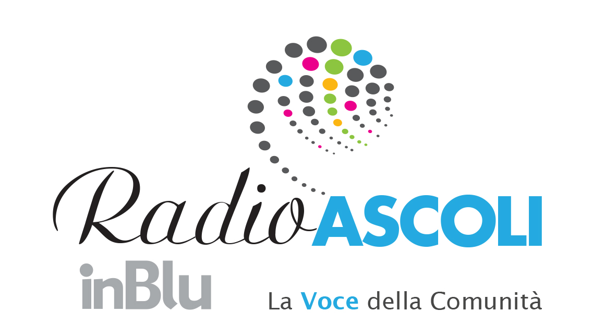

Home
Diretta
Podcast
Notizie
Richieste
Contatti

Radio ASCOLI
'">
inBlu • La Voce della Comunita'
Ascolta Live
FM
103.0
103.8
87.5
98.1
90.1
📻
Diretta
Streaming 24/7
🎙
Podcast
On demand
📰
Notizie
Dal Piceno
📋
Richieste
Scrivi alla redazione
Ultime Notizie
Vedi tutte →
Caricamento notizie...
Radio ASCOLI
'">
ON AIR
La Voce della Comunita' • inBlu
▶
103.0
103.8
87.5
98.1
90.1
Redazione • Orario
Lun–Ven 08:30–18:00 • Sab 08:30–13:00
Tel.
0736/25.01.82
Informazione
4 GR al giorno • Rassegna Stampa mattutina •
Realtà Locali
• GR InBlu ogni ora.
Palinsesto di oggi
Podcast
Programmi di Radio Ascoli — sempre aggiornati
Caricamento podcast...
Notizie
Dal territorio piceno — sempre aggiornate
Caricamento notizie...
📋 Richieste
Compila il modulo. Risponderemo presto.
🎧 Ascoltare
📢 Pubblicita'
✉ Altro
Vorrei ascoltare...
— Trasmetteremo nell'arco di
1 ora
. Inviata a
[email protected]
Nome
*
Canzone / Artista
*
Dedica?
Si' — la dedico a qualcuno
No — solo per me
A chi?
Messaggio (facoltativo)
0/250
🔒 Dati trattati da A&P Media srl. La richiesta sara' inviata via email.
Acconsento alla lettura in onda e accetto la privacy
*
Invia Richiesta
Vorrei fare pubblicita'
— Inviata a
[email protected]
Nome
*
Cognome
*
Azienda
*
Email
*
Telefono
*
Tipo
Spot radiofonico
Sponsorizzazione programma
Pubbliredazionale
Preferisco essere contattato
*
Telefonicamente
Per email
Fascia oraria
Mattina
9-12
Primo pom.
12-15
Pomeriggio
15-18
🔒 Dati trattati da A&P Media srl.
[email protected]
Accetto il trattamento dati
*
Richiedi Preventivo
Altro
— Segnalazioni, suggerimenti, collaborazioni. Inviata a
[email protected]
Nome
*
Cognome
*
Email
*
Tipo
*
Seleziona...
Segnalazione notizia
Suggerimento / Critica
Proposta di collaborazione
Informazioni generali
Problemi tecnici app
Altro
Messaggio
*
0/1000
🔒 Dati trattati da A&P Media srl nel rispetto del GDPR.
Accetto la privacy policy
*
Invia Messaggio
Contatti
La Voce della Comunita' • inBlu
Redazione
📍
Indirizzo
Lungo Castellano Sisto V, 56 — 63100 Ascoli Piceno
📞
Telefono
0736 / 25.01.82
✉
Email
[email protected]
Ufficio Commerciale
📞
Telefono
0736 / 25.01.82
✉
Email
[email protected]
Frequenze FM
103.0
103.8
87.5
98.1
90.1
Facebook
Instagram
YouTube
SoundCloud
A&P Media srl • Reg. Trib. Ascoli Piceno n.151 del 05/03/1977
Dir. Resp.: Lanfranco Norcini Pala • Tutti i diritti riservati
Radio Ascoli — Tocca Play
FM 103.0 • Ascoli Piceno
▶
←
Radio Ascoli
Caricamento articolo...